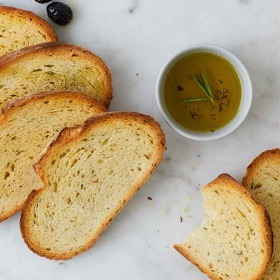

← All recipes
Rosemary Olive Oil Bread

Servings: 16 · Prep: 20 min · Cook: 50 min
Ingredients
- 3 cups (360g) King Arthur Unbleached All-Purpose Flour
- 2 teaspoons instant yeast or active dry yeast
- 1 1/4 teaspoons (8g) table salt
- 1/3 cup (67g) olive oil
- 3/4 cup (170g) water, plus more as needed
- 1 to 2 tablespoons chopped fresh rosemary, to taste
Directions
- Weigh your flour; or measure it by gently spooning it into a cup, then sweeping off any excess.
- Combine the flour, yeast, and salt in a food processor. Turn on the machine and add the olive oil through the feed tube, followed by 3/4 cup water. Process for about 30 seconds, adding more water 1 tablespoon at a time until the mixture forms a ball and is slightly sticky to the touch.
- Turn the dough onto a floured work surface and knead in the rosemary by hand until the dough feels smooth. Place in a bowl, cover, and let rise until doubled, about 2 hours.
- When the dough has risen, deflate it and shape it into a round ball (boule). Flour a brotform or line a bowl with a well-floured kitchen towel and place the loaf into it, seam side up. Cover and let rise for 1 to 2 hours, until puffy.
- When the dough is almost fully risen, preheat the oven to 425°F. Place a cast-iron skillet on the floor of the oven (or on the lowest rack). Place a baking stone on a rack above the skillet.
- When you're ready to bake, turn the dough out onto a peel or a parchment-lined baking sheet. Dust the top with flour and slash the top.
- Slide the loaf onto the baking stone. Carefully pour 1 cup (227g) hot water into the skillet to create steam and immediately close the oven door.
- Bake the bread for 45 to 50 minutes, until the crust is golden brown and the bottom sounds hollow when tapped. The internal temperature should read 200°F when measured with a digital thermometer. Remove from the oven and cool on a rack.
- Remove the bread from the oven and cool it on a rack.
- Store the bread, well wrapped, on the counter for up to three days. Slice and freeze for longer storage.
Original source: kingarthurbaking.com